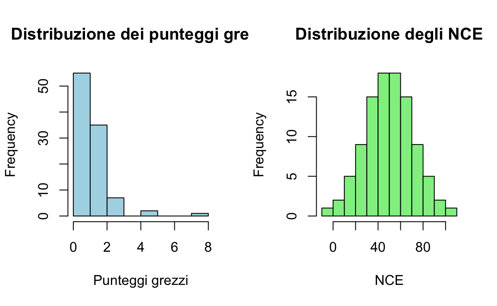
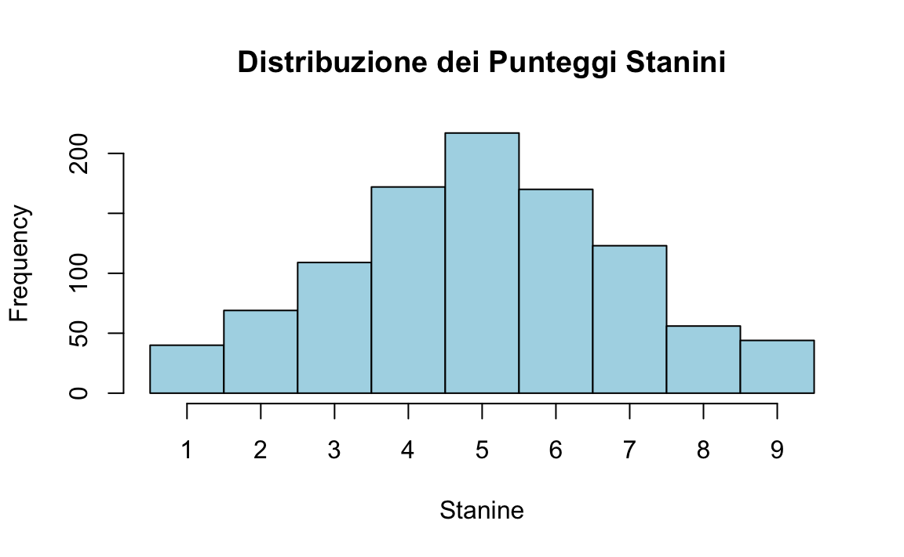

1 Punteggi e scale
Prerequisiti
- Leggere i capitoli 1, Scores and Scales, e 2, Constructs, del testo Principles of psychological assessment di Petersen (2024).
- Si consiglia di ripassare i concetti fondamentali della teoria delle probabilità, in particolare le distribuzioni di massa e di densità di probabilità. Per approfondire, si rimanda al materiale didattico dell’insegnamento di Psicometria disponibile al link [https://ccaudek.github.io/psicometria-r/].
- Lettere A Tutorial on Regression-Based Norming of Psychological Tests With GAMLSS (Timmerman et al., 2021).
Concetti e Competenze Chiave
- Tipologie di dati e loro implicazioni.
- Punteggi grezzi e trasformati.
- Interpretazioni basate sulla norma e sul criterio.
- Metodi di normazione: tradizionale vs regressione;
- Teoria della Risposta agli Item (IRT) e punteggi standardizzati.
Preparazione del Notebook
1.1 Introduzione
Questo capitolo si propone di introdurre l’utilizzo del software R, ponendo l’attenzione sulla differenza tra valutazioni normative e criteriali.
1.2 Tipologie di Dati
Si possono identificare quattro principali categorie di dati: nominali, ordinali, di intervallo e di rapporto. È opportuno notare che, in funzione dell’utilizzo della variabile, i dati possono rientrare in più di una categoria. La tipologia del dato influisce significativamente sulle modalità di analisi applicabili. A titolo esemplificativo, l’analisi statistica parametrica (come la regressione lineare) presuppone che i dati siano di intervallo o di rapporto.
1.2.1 Dati Nominali
I dati nominali si configurano come categorie distinte, caratterizzate da natura categorica e prive di ordinamento. Tali dati non esprimono affermazioni di natura quantitativa, bensì rappresentano entità nominabili (ad esempio, “felino” e “canino”). Sebbene possano essere rappresentati numericamente, come nel caso dei codici postali o dei codici identificativi di genere, etnia o razza dei partecipanti, è fondamentale sottolineare che valori numerici più elevati non riflettono livelli superiori (o inferiori) del costrutto, in quanto i numeri rappresentano meramente categorie prive di ordine intrinseco.
1.2.2 Dati Ordinali
I dati ordinali si distinguono per essere categorie ordinate: possiedono una denominazione e un ordine. Non forniscono informazioni sulla distanza concettuale tra i ranghi, ma indicano esclusivamente che valori più elevati rappresentano livelli superiori (o inferiori) del costrutto. Un esempio paradigmatico è costituito dalle posizioni in classifica successive a una competizione: il concorrente classificato al primo posto ha concluso la gara prima del secondo classificato, il quale a sua volta ha preceduto il terzo (1 > 2 > 3 > 4). È cruciale evidenziare che la distanza concettuale tra numeri adiacenti non è necessariamente equivalente.
1.2.3 Dati di Intervallo
I dati di intervallo sono caratterizzati da un ordine e da distanze significative (ovvero, intervalli equidistanti). Questi dati consentono operazioni di somma (ad esempio, 2 dista 2 unità da 4), ma non di moltiplicazione (\(2 \times 2 \ne 4\)). Esempi emblematici sono le temperature espresse in gradi Fahrenheit o Celsius: 100 gradi Fahrenheit non equivalgono al doppio di 50 gradi Fahrenheit. È importante sottolineare che, sebbene in psicologia molti dati presentino la medesima distanza matematica tra gli intervalli, è probabile che tali intervalli non rappresentino la medesima distanza concettuale.
1.2.4 Dati di Rapporto
I dati di rapporto si distinguono per essere ordinati, caratterizzati da distanze significative e da uno zero assoluto che rappresenta l’assenza del costrutto. In questa tipologia di dati, le relazioni moltiplicative risultano valide. Un esempio paradigmatico è la temperatura espressa in gradi Kelvin: 100 gradi Kelvin corrispondono effettivamente al doppio di 50 gradi Kelvin. Nel campo della psicologia, l’aspirazione a disporre di scale di rapporto persiste, nonostante la difficoltà di definire uno zero assoluto per i costrutti psicologici: come si potrebbe, infatti, concettualizzare l’assenza totale di depressione?
1.3 Punteggi Grezzi e Trasformati
Nell’ambito dei test psicometrici, il punteggio grezzo costituisce la valutazione più immediata e si basa sulla somma delle risposte categorizzate, come quelle corrette o errate, o vero o falso. Nonostante la sua immediatezza, il punteggio grezzo presenta limitazioni interpretative, poiché non considera fattori contestuali quali il numero totale di domande o il livello di difficoltà di queste.
Per mitigare queste limitazioni, i punteggi grezzi vengono spesso convertiti in formati che permettono un’interpretazione più contestualizzata, quali i punteggi standardizzati o scalati. Queste trasformazioni facilitano l’interpretazione dei risultati ottenuti.
- L’interpretazione dei risultati dei test necessita di un riferimento comparativo. A seconda del contesto, può essere utile confrontare le prestazioni con una norma di riferimento o con criteri specifici.
- Un altro approccio interpretativo è offerto dalla Teoria della Risposta agli Item (IRT), che fornisce un’analisi avanzata delle prestazioni nei test, permettendo un’esplorazione dettagliata delle risposte individuali.
1.4 Interpretazioni Basate sulla Norma
La maggior parte dei test psicologici—come quelli di intelligenza, dello sviluppo, neuropsicologici e clinici—utilizza punteggi basati su norme di riferimento. In questi test, i punteggi grezzi vengono trasformati in punteggi normativi che esprimono la performance di un individuo in relazione a una popolazione di riferimento. Questo tipo di interpretazione permette di collocare il risultato del soggetto all’interno di una distribuzione normativa, fornendo una misura relativa rispetto a ciò che è considerato tipico o normale per quel gruppo. Mentre i test normativi offrono informazioni sulla posizione relativa di un soggetto rispetto a un gruppo, i test basati su criteri determinano se il soggetto ha raggiunto un livello specifico di competenza o conoscenza.
Un aspetto cruciale in queste interpretazioni è la pertinenza del gruppo di riferimento. È fondamentale che questo gruppo sia rappresentativo degli individui a cui il test è destinato o con cui il partecipante viene confrontato. La selezione del campione normativo, o campione di standardizzazione, segue il principio del campionamento casuale stratificato proporzionale, assicurando che il campione rifletta proporzionalmente le caratteristiche demografiche nazionali. Quando si utilizzano questi test, è fondamentale valutare se il campione di standardizzazione è rappresentativo per l’uso previsto e se le caratteristiche demografiche del campione corrispondono a quelle dei soggetti testati. La pertinenza e l’attualità del campione, insieme alla sua dimensione, sono fattori chiave per garantire interpretazioni valide e affidabili.
Un’altra considerazione importante riguarda l’importanza della standardizzazione nella somministrazione del test. È essenziale che il campione di riferimento sia stato sottoposto al test nelle stesse condizioni e secondo le stesse procedure amministrative che saranno utilizzate nella pratica effettiva. Pertanto, quando il test viene somministrato in contesti clinici, è cruciale che l’esaminatore segua attentamente le procedure amministrative prescritte. Ad esempio, nel caso di test standardizzati, è fondamentale leggere le istruzioni esattamente come fornite e rispettare rigorosamente i limiti di tempo. Sarebbe inappropriato confrontare la performance di un esaminando in un test a tempo con quella di un campione di standardizzazione che ha avuto più o meno tempo per completare gli item. Questa necessità di seguire procedure standardizzate si applica a tutti i test standardizzati, sia quelli con interpretazioni basate sulla norma che quelli basati sul criterio.
1.4.1 Approccio Tradizionale vs Approccio Basato sulla Regressione per la Normazione
Una caratteristica distintiva dei test psicologici con punteggi normati è che le norme spesso dipendono da caratteristiche specifiche come l’età, il sesso e/o il livello educativo. Ciò significa che esistono diverse popolazioni di riferimento, ciascuna con le proprie norme, che insieme costituiscono la popolazione normativa del test. Le norme vengono definite durante la fase di costruzione del test.
La normazione dei punteggi grezzi è essenziale per interpretare le prestazioni di un individuo rispetto a un gruppo di riferimento. Quando i punteggi dipendono da variabili continue come l’età, è possibile adottare due approcci principali: il metodo tradizionale e quello basato sulla regressione. La figura seguente illustra le differenze tra questi due metodi (Timmerman et al., 2021).
1.4.1.1 Normazione Tradizionale
Nell’approccio tradizionale, la variabile continua (ad esempio, l’età) viene suddivisa in intervalli discreti (ad esempio, fasce di età), e i punteggi normativi vengono calcolati per ciascun intervallo. Ad esempio:
- Nel Pannello A, i punteggi grezzi del test sono suddivisi in intervalli di 4 anni. Per ogni fascia, viene calcolata la mediana e i relativi intervalli di confidenza al 95% (IC 95%).
- Nel Pannello B, si utilizzano intervalli più stretti di 1 anno, ottenendo stime più precise.
Questo metodo implica che i punteggi grezzi all’interno di ogni intervallo siano trattati come equivalenti, assumendo implicitamente che la distribuzione dei punteggi sia costante per tutte le età nell’intervallo.
Problemi dell’approccio tradizionale:
Discontinuità tra intervalli: Quando un soggetto si trova vicino al limite tra due intervalli, lo stesso punteggio grezzo può essere interpretato diversamente. Ad esempio, un bambino di 12 anni e 364 giorni potrebbe ricevere un’interpretazione diversa rispetto a uno di 13 anni e 1 giorno, nonostante la minima differenza di età.
Irrealismo: La suddivisione in fasce può produrre salti “artificiali” nei punteggi normativi, non allineati con l’andamento reale secondo cui le prestazioni cambiano gradualmente con l’età.
Difficoltà con intervalli ampi: Intervalli larghi, come quelli di 4 anni, rischiano di non catturare le variazioni sottili nella distribuzione dei punteggi legate all’età (Pannello A). Intervalli più stretti (Pannello B) migliorano la precisione, ma richiedono campioni molto più grandi per ciascun intervallo.
1.4.1.2 Normazione Basata sulla Regressione
L’approccio basato sulla regressione supera i limiti del metodo tradizionale modellando i punteggi grezzi come una funzione continua della variabile di riferimento (ad esempio, l’età). Nel Pannello C, la relazione tra i punteggi grezzi e l’età è rappresentata come una curva continua e non lineare, che:
- Permette di stimare i punteggi normativi per qualsiasi età.
- Riflette un cambiamento graduale e realistico dei punteggi rispetto all’età, evitando salti artificiali.
Vantaggi della regressione:
Continuità: Non ci sono salti tra intervalli di età. I punteggi grezzi vengono interpretati in modo fluido e realistico, anche per età non incluse esplicitamente nei dati del campione.
Flessibilità: Il modello può adattarsi a distribuzioni non lineari, catturando andamenti complessi nei dati senza richiedere un’eccessiva stratificazione del campione.
Efficienza: Si richiedono meno dati, poiché non è necessario suddividere la popolazione in molti piccoli intervalli.
In conclusione, l’approccio basato sulla regressione rappresenta un metodo moderno e flessibile per la normazione dei punteggi nei test psicologici. Esso è in grado di catturare andamenti graduali nei punteggi grezzi e di evitare le discontinuità tipiche dell’approccio tradizionale.
1.5 Punteggi Derivati
In ambito psicometrico, i punteggi derivati da test possono assumere diverse forme, ciascuna con implicazioni specifiche per l’interpretazione dei dati. Esploreremo le tipologie più comuni:
-
Punteggi Standardizzati:
- Questi punteggi trasformano i punteggi grezzi (ad esempio, il numero di risposte corrette) in misure standardizzate, rendendoli confrontabili tra individui o gruppi diversi.
- La trasformazione avviene stabilendo una media e una deviazione standard di riferimento, che possono essere basate su un campione normativo o definite in base a criteri teorici.
- Esempi:
-
z-scores: Indicano di quante deviazioni standard un punteggio si discosta dalla media della distribuzione di riferimento. Sono calcolati rispetto alla media e alla deviazione standard del campione normativo, assumendo una distribuzione normale con media 0 e deviazione standard 1.
-
T-scores: Sono una trasformazione lineare dei punteggi z, con una media fissata a 50 e una deviazione standard di 10, così da evitare valori negativi e rendere più intuitiva l’interpretazione.
- Punteggi di QI: Utilizzati nelle scale di intelligenza, hanno una media convenzionale di 100 e una deviazione standard di 15, basate su una distribuzione normale standardizzata della popolazione di riferimento.
-
z-scores: Indicano di quante deviazioni standard un punteggio si discosta dalla media della distribuzione di riferimento. Sono calcolati rispetto alla media e alla deviazione standard del campione normativo, assumendo una distribuzione normale con media 0 e deviazione standard 1.
- Questi punteggi trasformano i punteggi grezzi (ad esempio, il numero di risposte corrette) in misure standardizzate, rendendoli confrontabili tra individui o gruppi diversi.
-
Punteggi Standardizzati Normalizzati:
- Quando i punteggi grezzi non seguono una distribuzione normale, si applicano trasformazioni non lineari per ottenere una distribuzione che si avvicini a quella normale, rendendo i punteggi più facilmente interpretabili.
- Esempi:
-
Stanine: Suddividono la distribuzione in 9 categorie di ampiezza simile (da 1 a 9), con media 5 e deviazione standard di circa 2.
-
Punteggi scalati di Wechsler: Derivati dai punteggi grezzi nelle scale di Wechsler, con media 10 e deviazione standard 3, e normalizzati per adattarsi a una distribuzione teorica attesa.
- Equivalenti della Curva Normale (NCE): Sono una trasformazione dei ranghi percentili che rende i punteggi confrontabili come se seguissero una distribuzione normale.
-
Stanine: Suddividono la distribuzione in 9 categorie di ampiezza simile (da 1 a 9), con media 5 e deviazione standard di circa 2.
- Quando i punteggi grezzi non seguono una distribuzione normale, si applicano trasformazioni non lineari per ottenere una distribuzione che si avvicini a quella normale, rendendo i punteggi più facilmente interpretabili.
-
Ranghi Percentili:
- Esprimono la posizione relativa di un punteggio rispetto alla distribuzione di riferimento, indicando la percentuale di soggetti che hanno ottenuto un punteggio uguale o inferiore.
- Non assumono una distribuzione normale e non sono equidistanti: la differenza tra il 50° e il 60° percentile non è necessariamente uguale a quella tra il 90° e il 100° percentile.
- Ad esempio, un punteggio al 75° percentile indica che il soggetto ha ottenuto un risultato superiore al 75% della popolazione di riferimento.
- Esprimono la posizione relativa di un punteggio rispetto alla distribuzione di riferimento, indicando la percentuale di soggetti che hanno ottenuto un punteggio uguale o inferiore.
1.5.1 Interpretazioni Basate su Criteri
L’approccio delle valutazioni basate su criteri specifici è diventato sempre più rilevante nel mondo dell’educazione e della psicometria a partire dagli anni Sessanta. Questo approccio, noto anche come valutazione basata su contenuti, dominio o obiettivi, si concentra sulla misurazione delle competenze individuali rispetto a standard definiti, piuttosto che sul confronto con le prestazioni di un gruppo di riferimento.
Ecco alcune metodologie e applicazioni comuni:
-
Percentuale di Risposte Corrette:
- Questo metodo fornisce un’indicazione diretta delle competenze di uno studente.
- Ad esempio, se uno studente risponde correttamente all’85% delle domande di matematica, l’insegnante può valutare le sue abilità in modo specifico.
-
Test di Padronanza:
- Questi test determinano se uno studente ha acquisito una competenza specifica.
- Ad esempio, gli esami per la patente di guida valutano se lo studente ha raggiunto il livello di padronanza richiesto.
-
Valutazioni Basate su Standard:
- Queste valutazioni classificano i risultati in categorie di prestazione (ad esempio, base, competente, avanzato).
- Spesso, i punteggi vengono correlati a voti letterali basati su una percentuale di correttezza.
I punti di forza delle valutazioni basate su criteri includono:
-
Comparazione con Standard Predefiniti:
- Valutano il raggiungimento di competenze o obiettivi specifici, indipendentemente dalle prestazioni altrui.
- Questo approccio evita il bias derivante dal confronto con altri studenti.
-
Focalizzazione su Competenze Specifiche:
- Questi test richiedono una definizione precisa dell’area di conoscenza o abilità valutata.
- Sono ideali per valutare aree di contenuto specifiche.
1.5.1.1 Benefici
- Valutazione Mirata delle Competenze: Fornisce una verifica concreta del conseguimento delle conoscenze e abilità delineate dal programma di studi.
- Personalizzazione dell’Insegnamento: Identifica le aree di debolezza, consentendo un approccio didattico più focalizzato e personalizzato.
In conclusione, le valutazioni basate su criteri rappresentano un’alternativa preziosa ai metodi di valutazione tradizionali, specialmente in contesti in cui è fondamentale misurare le competenze individuali. Questo approccio è in crescente adozione in ambiti educativi e formativi, enfatizzando l’importanza dell’acquisizione di conoscenze e abilità mirate.
1.6 Analisi Comparativa tra Valutazioni Normative e Basate su Criteri
La distinzione tra valutazioni normative (norm-referenced) e basate su criteri (criterion-referenced) è fondamentale per interpretare le prestazioni individuali nei test. Sebbene un test possa teoricamente adottare entrambi gli approcci interpretativi, di solito si orienta verso uno dei due, a seconda dell’obiettivo specifico.
Ecco una panoramica delle differenze:
-
Valutazioni Normative:
- Versatilità: Si applicano a test che valutano una vasta gamma di dimensioni, come attitudini, risultati scolastici, interessi, atteggiamenti e comportamenti.
- Ampio Quadro: Ideali per esplorare costrutti generali come l’attitudine generale o l’intelligenza.
- Selezione delle Domande: Preferiscono domande di difficoltà intermedia, evitando quelle troppo semplici o complesse.
-
Valutazioni Basate su Criteri:
- Specificità: Associate principalmente a test che mirano a valutare conoscenze o competenze specifiche.
- Focalizzazione: Concentrate su abilità e competenze ben definite.
- Calibrazione delle Domande: La difficoltà delle domande è tarata in base alle conoscenze o abilità specifiche da valutare.
È importante notare che queste interpretazioni non sono mutuamente esclusive. Alcuni test offrono sia valutazioni normative che basate su criteri, fornendo una visione completa delle prestazioni relative rispetto a un gruppo di riferimento e del livello di competenza in un ambito specifico. Questa dualità interpretativa è preziosa in vari contesti.
1.7 Analisi dei Punteggi secondo la Teoria della Risposta agli Item
La Teoria della Risposta agli Item (IRT) rappresenta un notevole avanzamento nel campo della psicometria, fornendo strumenti essenziali per valutare con precisione le capacità e i tratti latenti degli individui.
Fondamenti e Principi dell’IRT: L’IRT si basa sull’assunto che ogni persona possieda un livello di un tratto latente, come l’intelligenza, che è indipendente dalle specifiche domande del test o dal metodo di valutazione utilizzato. Attraverso l’applicazione di modelli matematici complessi, l’IRT consente di posizionare ogni individuo su un continuum di tratto latente, offrendo una misurazione delle capacità più precisa rispetto ai tradizionali punteggi grezzi.
Vantaggi dei Punteggi basati sull’IRT: I punteggi derivati dall’IRT presentano significativi vantaggi. Essi sono trattati come punteggi a intervalli costanti, consentendo comparazioni valide tra le performance di soggetti o gruppi diversi. Inoltre, questi punteggi mantengono una deviazione standard uniforme attraverso diverse fasce d’età, rendendoli particolarmente adatti per monitorare l’evoluzione o il progresso delle abilità nel tempo.
Applicazioni Pratiche e Prospettive Future dell’IRT: Una delle applicazioni più innovative dell’IRT è lo sviluppo dei test adattivi computerizzati (CAT), in cui le domande vengono selezionate dinamicamente in base alle risposte precedenti del candidato. Questo metodo consente valutazioni precise ed efficienti delle abilità in tempo reale.
1.8 La Selezione del Punteggio Appropriato per la Valutazione
Determinare il tipo di punteggio più adeguato per un test è essenziale per ottenere informazioni specifiche e pertinenti dalla valutazione. Le diverse categorie di punteggi forniscono risposte a domande distinte riguardo alle prestazioni degli esaminandi:
-
Punteggi Grezzi:
- Rappresentano la quantità totale di risposte corrette accumulate da un individuo.
- Offrono una visione immediata del livello di prestazione e permettono di stabilire un ordine tra i partecipanti.
- Sono utili per identificare rapidamente il posizionamento relativo di un individuo all’interno di un gruppo.
-
Punteggi Norm-Referenced Standard:
- Forniscono un confronto diretto tra le prestazioni di un individuo e quelle di un gruppo normativo.
- Consentono di interpretare la prestazione su una scala relativa, facilitando la comprensione del rendimento in termini di posizione all’interno di una popolazione di riferimento.
-
Punteggi Criterion-Referenced:
- Indicano se un individuo ha raggiunto un determinato standard di competenza.
- Sono particolarmente indicati per valutare il conseguimento di obiettivi specifici o competenze chiave.
-
Punteggi Basati sull’IRT (Inclusi i Punteggi Rasch):
- Offrono una misurazione su scala a intervalli costanti, riflettendo la posizione di un individuo su un continuum di un tratto latente.
- Sono ideali per tracciare il progresso nel tempo o confrontare le prestazioni attraverso diverse valutazioni di un medesimo tratto.
Ad esempio, nel caso di Giovanni, che ha beneficiato di un programma di supporto alla lettura:
- Punteggi Norm-Referenced: Fornirebbero insight su come le capacità di lettura di Giovanni si confrontano con quelle dei suoi coetanei dopo l’intervento.
- Punteggi Rasch o IRT: Consentirebbero di valutare l’evoluzione precisa delle competenze di lettura di Giovanni, misurando il progresso a partire dal suo livello iniziale.
- Punteggi Grezzi: Darebbero indicazioni sul miglioramento assoluto, sebbene privi della capacità di riflettere le variazioni in termini di difficoltà degli item o di altri fattori.
- Punteggi Criterion-Referenced: Stabilirebbero se Giovanni ha raggiunto specifici obiettivi di competenza in lettura definiti a priori.
In conclusione, la scelta del tipo di punteggio da utilizzare è guidata dal contesto di valutazione e dall’obiettivo specifico della misurazione.
1.9 Significato e Applicazione delle Norme e dei Punteggi Standardizzati
Per chiarire questi concetti, esaminiamo i dati della Tabella 2.1 di Bandalos (2018). Con degli esempi numerici, analizzeremo vari tipi di punteggi normativi, tra cui:
- Punteggi Percentili: Che indicano la posizione relativa di un individuo all’interno del gruppo normativo.
- Punteggi Standardizzati e Normalizzati: Che trasformano i punteggi grezzi in una scala standard per facilitare il confronto tra diversi individui o gruppi.
- Stanini: Un metodo di punteggio che divide i punteggi in intervalli standardizzati.
- Equivalenti alla Curva Normale: Che adattano i punteggi a una distribuzione normale.
Nei capitoli successivi esamineremo poi come calcolare i punteggi basati sulla teoria IRT.
Iniziamo a leggere i dati.
raw_score <- c(
26, 25, 33, 31, 26, 34, 29, 36, 25, 29, 28, 32, 25,
30, 27, 31, 30, 30, 35, 30, 27, 26, 34, 32, 26, 34,
30, 28, 28, 31, 30, 27, 26, 29, 29, 33, 27, 35, 26,
27, 28, 29, 28, 27, 34, 36, 26, 26, 34, 30, 34, 27
)1.9.1 Distribuzione di frequenze
freq <- table(raw_score) # frequency
cumfreq <- cumsum(freq) # cumulative frequency
perc <- prop.table(freq) * 100 # percentage
cumperc <- cumsum(perc) # cumulative percentage
pr <- (cumperc - 0.5 * perc) # percentile rank
cbind(freq, cumfreq, perc, cumperc, pr)
#> freq cumfreq perc cumperc pr
#> 25 3 3 5.77 5.77 2.88
#> 26 8 11 15.38 21.15 13.46
#> 27 7 18 13.46 34.62 27.88
#> 28 5 23 9.62 44.23 39.42
#> 29 5 28 9.62 53.85 49.04
#> 30 7 35 13.46 67.31 60.58
#> 31 3 38 5.77 73.08 70.19
#> 32 2 40 3.85 76.92 75.00
#> 33 2 42 3.85 80.77 78.85
#> 34 6 48 11.54 92.31 86.54
#> 35 2 50 3.85 96.15 94.23
#> 36 2 52 3.85 100.00 98.081.9.2 Punteggi Percentili
I punteggi percentili sono un modo efficace per interpretare e confrontare i punteggi di un individuo con quelli di un campione normativo. Un punteggio percentile indica la posizione relativa di un individuo all’interno di un gruppo normativo. Più specificamente, un punteggio percentile mostra la percentuale di persone nel campione normativo che ha ottenuto un punteggio uguale o inferiore a quello dell’individuo in questione.
quantile(raw_score, .74)
#> 74%
#> 31.7# Use a different type (see https://en.wikipedia.org/wiki/Quantile
# Estimating_quantiles_from_a_sample)
quantile(raw_score, .74, type = 6)
#> 74%
#> 32I punteggi percentili sono particolarmente utili perché offrono una comprensione intuitiva della posizione di un individuo rispetto agli altri. Tuttavia, è importante notare che essi rappresentano una scala ordinale e, pertanto, le differenze tra i punteggi percentili non sono necessariamente uniformi o proporzionali attraverso l’intera gamma di punteggi.
1.9.3 Punteggi Standardizzati
I punteggi standardizzati consentono di confrontare i risultati di individui o gruppi in maniera equa e coerente, superando le variazioni di scala o di difficoltà tra diversi test.
1.9.3.1 Principi Fondamentali dei Punteggi Standardizzati
- Media e Deviazione Standard Predefinite: I punteggi standardizzati sono calcolati in modo tale da avere una media e una deviazione standard specifiche, stabilite in anticipo. Per esempio, spesso si utilizza una media di 100 e una deviazione standard di 15 (come nei test di intelligenza) o una media di 0 e una deviazione standard di 1 (come negli z-score).
- Risultati Confrontabili: Attraverso questa standardizzazione, i punteggi diventano direttamente confrontabili. Un punteggio standardizzato rispetto a una media di 100 e una deviazione standard di 15, ad esempio, permette di valutare rapidamente se un punteggio è al di sopra, al di sotto o vicino alla media del campione normativo.
1.9.3.2 Come Funziona la Trasformazione
Il processo di standardizzazione implica la sottrazione della media del campione normativo dal punteggio grezzo di un individuo, seguita dalla divisione del risultato per la deviazione standard del campione normativo. In termini matematici, se $ X $ è un punteggio grezzo, $ $ è la media del campione normativo e $ $ è la deviazione standard del campione normativo, allora il punteggio standardizzato $ Z $ è calcolato come:
\[ Z = \frac{X - \mu}{\sigma}. \]
1.9.3.3 Utilità dei Punteggi Standardizzati
- Comparabilità: Rendono i punteggi ottenuti da test diversi o da campioni diversi direttamente comparabili.
- Interpretazione Facilitata: Forniscono un modo semplice per interpretare i punteggi individuali in termini di posizione relativa rispetto alla media del campione normativo.
- Adattabilità: Sono utili in una varietà di contesti, da test educativi a valutazioni cliniche.
In conclusione, i punteggi standardizzati sono uno strumento cruciale nella psicometria e nella valutazione educativa. Trasformando i punteggi grezzi in una scala comune con media e deviazione standard specifiche, facilitano il confronto e l’interpretazione dei risultati dei test, rendendo più accessibile l’analisi e la valutazione delle prestazioni individuali e di gruppo.
Nel caso dell’esempio, i calcoli si svolgono in R nel modo seguente:
1.9.3.4 Punteggi T
I punteggi T sono una forma specifica di punteggi standardizzati, utilizzati frequentemente nella psicometria per rendere più accessibili e interpretabili i risultati dei test. A differenza dei punteggi z, che tipicamente hanno una media di 0 e una deviazione standard di 1, i punteggi T sono trasformati in modo da avere una media fissata a 50 e una deviazione standard di 10.
1.9.3.5 Caratteristiche Principali dei Punteggi T
Media e Deviazione Standard: La media fissata a 50 e la deviazione standard di 10 sono scelte per offrire una scala più intuitiva e di facile lettura rispetto agli z-score. Questa trasformazione sposta la scala degli z-score in una gamma numericamente più familiare e più semplice da interpretare per la maggior parte delle persone.
-
Calcolo dei Punteggi T: Il calcolo dei punteggi T avviene trasformando prima i punteggi grezzi in z-score e poi convertendo questi z-score nella scala dei punteggi T. Matematicamente, se \(Z\) è lo z-score, il punteggio T corrispondente \(T\) è calcolato come:
\[ T = 50 + 10 \times Z. \]
Questa formula adatta lo z-score in una scala che inizia da 50 e si allarga in entrambe le direzioni con incrementi standard di 10 per ogni deviazione standard.
1.9.3.6 Utilizzo dei Punteggi T
- Facilità di Interpretazione: I punteggi T sono particolarmente utili quando si desidera presentare i risultati dei test in un formato che sia immediatamente comprensibile, senza la necessità di ulteriori calcoli o trasformazioni.
- Comparabilità: Consentono di confrontare i risultati di test diversi in modo più diretto, grazie alla loro scala standardizzata.
- Ampio Utilizzo: Sono ampiamente usati in vari ambiti della valutazione psicologica, inclusi l’educazione, la ricerca e la pratica clinica.
In sintesi, i punteggi T offrono un modo efficace e standardizzato per interpretare i risultati dei test, rendendo i dati più accessibili e immediatamente comprensibili. La loro trasformazione da z-score a una scala con media 50 e deviazione standard 10 facilita la comprensione e la comparazione dei punteggi tra diversi test e diversi individui.
Svolgendo i calcoli in R otteniamo
1.9.4 Punteggi Stanini
I punteggi Stanini (dall’inglese “standard nine”) rappresentano un metodo standardizzato per categorizzare i risultati dei test in psicometria, dividendoli in nove intervalli. Questa scala, progettata per semplificare l’interpretazione dei dati, permette di valutare la posizione relativa di un individuo all’interno di un gruppo di riferimento.
Come funzionano? Ogni intervallo Stanine corrisponde a un range di punteggi grezzi, con un’ampiezza che può variare leggermente a seconda della distribuzione dei dati. Un punteggio Stanine di 5 indica una prestazione media, mentre valori più alti o più bassi indicano prestazioni rispettivamente superiori o inferiori alla media. È importante notare che i punteggi Stanini sono principalmente utilizzati per confronti relativi all’interno di un gruppo, piuttosto che per misurazioni assolute.
Calcolo dei Punteggi Stanini. Per calcolare i punteggi Stanini, è necessario seguire alcuni passaggi:
Determinare Media e Deviazione Standard: Inizialmente, si calcolano la media e la deviazione standard dei dati del campione normativo.
-
Applicare la Formula dei Punteggi Stanini: Per ogni punteggio grezzo, si applica la seguente formula per calcolare il punteggio Stanine corrispondente:
\[ \text{Stanine} = \left( \frac{\text{Punteggio Grezzo} - \text{Media}}{\text{Deviazione Standard}} \right) \times 2 + 5. \]
Questa formula trasforma il punteggio grezzo in un valore sulla scala dei punteggi Stanini.
Arrotondare al Numero Intero Più Vicino: Infine, si arrotonda il risultato al numero intero più vicino per ottenere il punteggio Stanini finale.
I punteggi Stanini offrono diversi vantaggi:
- Semplicità: La scala a nove punti è facile da comprendere e memorizzare.
- Rapidità: Permettono una valutazione rapida della performance.
- Standardizzazione: Consentono di confrontare i risultati ottenuti in test diversi o da gruppi diversi.
Limitazioni:
Sebbene i punteggi Stanini siano uno strumento utile, è importante considerarne anche i limiti: essi assumono una distribuzione normale dei dati e quindi non sono adatti a tutti i tipi di test.
Per l’esempio presente abbiamo:
È importante ricordare che la trasformazione in punti z non cambia la forma della distribuzione.
La seguente figura proposta da Petersen (2024) illustra le relazioni tra i punteggi stanini e altre tipologie di punteggi derivati.
1.9.5 Equivalenti alla Curva Normale (NCE)
Gli Equivalenti alla Curva Normale (NCE, dall’inglese “Normal Curve Equivalents”) sono un metodo di standardizzazione dei punteggi utilizzato in ambito psicometrico. L’obiettivo principale di questa trasformazione è convertire i punteggi grezzi di un test in una scala che segue approssimativamente una distribuzione normale, facilitando così il confronto diretto tra misure o test diversi.
In pratica, il procedimento si articola nei seguenti passaggi: - Calcolo del rango percentuale: Per ciascun punteggio grezzo si determina la posizione percentuale all’interno della distribuzione. - Mappatura sulla scala normale: Il rango percentuale viene poi “mappato” su una scala teorica che rispetta le caratteristiche di una distribuzione normale standard (tipicamente con media 50 e una deviazione standard prefissata).
È fondamentale sottolineare che questa trasformazione non “normalizza” i dati nel senso di correggere eventuali asimmetrie o deviazioni presenti nella distribuzione originale, ma assegna a ciascun punteggio il valore che esso assumerebbe se la distribuzione fosse perfettamente normale. Ad esempio, un punteggio situato al 84° percentile nella distribuzione grezza viene convertito in un valore equivalente a uno z-score di circa 1, secondo la scala NCE.
Pertanto, i NCE rappresentano il risultato di una trasformazione non lineare, mirata a rappresentare i punteggi su una scala standardizzata che riflette le proprietà di una distribuzione normale, senza alterare l’ordine dei punteggi originari.
Esaminiamo il seguente esempio.
- Simulazione dei punteggi grezzi. Creiamo 100 punteggi grezzi simulati da una distribuzione esponenziale (non normale).
- Calcolo dei percentili per i punteggi grezzi. Utilizziamo la formula: \((\text{rank} - 0.5)/n\) per ottenere percentili centrati.
raw_percentiles <- (rank(raw_scores, ties.method = "average") - 0.5) / n- Trasformazione in NCE. Per ogni punteggio calcoliamo lo z-score corrispondente tramite la funzione
qnorm().
z_scores <- qnorm(raw_percentiles)
# Successivamente trasformiamo lo z-score in NCE impostando una media di 50 e una SD di circa 21.06
nce_scores <- 50 + 21.06 * z_scores- Calcolo dei percentili per i punteggi NCE.
nce_percentiles <- (rank(nce_scores, ties.method = "average") - 0.5) / nsummary(nce_percentiles)
#> Min. 1st Qu. Median Mean 3rd Qu. Max.
#> 0.005 0.252 0.500 0.500 0.747 0.995- Creazione di una tabella riassuntiva.
df <- data.frame(
raw_score = round(raw_scores, 2),
raw_percentile = round(raw_percentiles, 2),
z_score = round(z_scores, 2),
nce_score = round(nce_scores, 2),
nce_percentile = round(nce_percentiles, 2)
)
head(df)
#> raw_score raw_percentile z_score nce_score nce_percentile
#> 1 0.84 0.48 -0.04 49.21 0.48
#> 2 0.58 0.40 -0.27 44.39 0.40
#> 3 1.33 0.70 0.54 61.35 0.70
#> 4 0.03 0.03 -1.96 8.72 0.03
#> 5 0.06 0.06 -1.51 18.11 0.06
#> 6 0.32 0.26 -0.63 36.77 0.26- Plot delle distribuzioni
Dividiamo l’area grafica in due colonne per visualizzare fianco a fianco le distribuzioni.
par(mfrow = c(1, 2))
# Istogramma dei punteggi grezzi
hist(raw_scores, main = "Distribuzione dei punteggi grezzi",
xlab = "Punteggi grezzi", col = "lightblue", breaks = 10)
# Istogramma degli NCE
hist(nce_scores, main = "Distribuzione degli NCE",
xlab = "NCE", col = "lightgreen", breaks = 10)
# Ripristino l'area grafica a una singola finestra
par(mfrow = c(1, 1))
Spiegazione passo per passo.
Simulazione dei punteggi grezzi:
Utilizziamo una distribuzione esponenziale per simulare dati che non seguono una distribuzione normale. Questo aiuta a mostrare come la trasformazione in NCE “mappa” i punteggi su una scala teoricamente normale.Calcolo dei percentili:
Con la funzionerank()e la formula \((\text{rank} - 0.5)/n\) otteniamo i percentili dei punteggi grezzi, che servono come base per la trasformazione.-
Trasformazione in NCE:
- Il comando
qnorm(raw_percentiles)trasforma i percentili nel corrispondente z-score (ovvero, il valore teorico in una distribuzione normale standard). - Applicando la formula \(\text{NCE} = 50 + 21.06 \times \text{z\_score}\) otteniamo i punteggi NCE, che hanno una media di 50 e una deviazione standard di circa 21.06.
- Il comando
Calcolo dei percentili dei NCE:
Viene eseguito lo stesso procedimento usato per i punteggi grezzi, per verificare che l’ordinamento rimanga inalterato.Tabella riassuntiva:
La tabella mostra, per ogni osservazione, il punteggio grezzo, il relativo percentile, lo z-score ottenuto, il punteggio NCE e il suo percentile.Plot delle distribuzioni:
Vengono creati due istogrammi affiancati: il primo mostra la distribuzione dei punteggi grezzi (spesso asimmetrica), mentre il secondo evidenzia la distribuzione degli NCE, che per costruzione segue una distribuzione normale teorica.
Questo esempio evidenzia come la trasformazione in NCE converta i dati originali in una scala standardizzata, mantenendo l’ordine dei punteggi ma “mappando” i valori su una distribuzione normale teorica, facilitando così il confronto tra diversi test o misure.
Il valore 21.06 è scelto per “espandere” la scala degli z-score in modo da ottenere una distribuzione NCE con media 50 e un intervallo approssimativo da 1 a 99.
Per chiarire:
- Nella trasformazione NCE si parte dallo z-score, che ha media 0 e deviazione standard 1.
- Moltiplicando lo z-score per 21.06 e aggiungendo 50 si ottiene una nuova scala centrata in 50.
- Il fattore 21.06 è scelto perché, considerando i valori estremi della distribuzione normale standard (circa -2.33 e +2.33, che corrispondono approssimativamente al 1° e al 99° percentile), il calcolo diventa:
- \(50 + 21.06 \times (-2.33) \approx 1\)
- \(50 + 21.06 \times (+2.33) \approx 99\)
Così, quasi tutti i punteggi (circa il 98% se consideriamo -2.33 e +2.33) rientrano nell’intervallo da 1 a 99, rendendo la scala intuitiva e facilmente interpretabile.
1.10 Riflessioni Conclusive
In questo capitolo abbiamo approfondito la trasformazione dei punteggi grezzi, una pratica fondamentale in psicometria per attribuire significato ai risultati dei test e facilitare l’analisi statistica. Abbiamo esaminato due approcci interpretativi principali:
Riferimento Normativo:
Questo metodo confronta il rendimento di un individuo con quello ottenuto da un gruppo di riferimento. Si utilizzano strumenti come i punteggi percentili, gli z-score e i T-score, che permettono confronti diretti e analisi statistiche robuste. Quando i dati non seguono una distribuzione normale, si ricorre a tecniche di normalizzazione, come gli stanini e gli Equivalenti alla Curva Normale (NCE), per mappare i punteggi su una scala teorica che agevoli l’interpretazione e il confronto.Riferimento Criteriale:
In questo caso, il rendimento viene valutato rispetto a standard prestabiliti, anziché confrontarlo con altri soggetti. Tale approccio è particolarmente utile per verificare il raggiungimento di specifici livelli di competenza in domini ben definiti.
La scelta tra questi metodi dipende da vari fattori:
Obiettivo della Valutazione:
Se si intende confrontare un soggetto con un gruppo, il riferimento normativo è l’approccio più indicato; se invece l’interesse è valutare il raggiungimento di standard specifici, si predilige il riferimento criteriale.Esigenze Analitiche:
I punteggi standardizzati sono ideali per analisi matematiche e confronti statistici, mentre i ranghi percentile offrono una lettura immediata della posizione relativa, pur presentando limiti per calcoli ulteriori.Necessità di Normalizzazione:
Tecniche come gli stanini e gli NCE consentono di trasformare i punteggi in una distribuzione più vicina a quella teorica della curva normale, migliorandone così l’interpretabilità e la comparabilità.
In sintesi, la scelta del metodo di trasformazione dei punteggi deve essere guidata dagli obiettivi specifici della valutazione, garantendo un’interpretazione accurata e utile dei risultati. Questa conoscenza è essenziale per condurre analisi psicometriche affidabili e rispondere in modo mirato alle domande di ricerca o alle esigenze diagnostiche.
Esercizi
Esercizio 1: Classificazione delle variabili
- Creare un data frame in R contenente cinque variabili con dati simulati:
- ID soggetto (codice numerico univoco, dati nominali).
- Sesso (M/F, dati nominali).
- Livello di ansia (scala Likert da 1 a 5, dati ordinali).
- Punteggio QI (media = 100, deviazione standard = 15, dati di intervallo).
- Tempo di reazione in secondi (valore continuo, dati di rapporto).
- Verificare la classe di ciascuna variabile con
class()e discuterne la tipologia.
Esercizio 2: Calcolo di Punteggi Standardizzati
- Utilizzando il data frame dell’Esercizio 1, standardizzare i punteggi QI e Tempo di Reazione con la formula dello z-score: \[ Z = \frac{X - \text{media}}{\text{deviazione standard}} \]
- Visualizzare la distribuzione dei punteggi grezzi e dei punteggi standardizzati con istogrammi.
Esercizio 3: Calcolo di Punteggi Percentili
- Utilizzare i punteggi QI generati in precedenza.
- Calcolare il percentile rank per ciascun partecipante.
- Identificare il punteggio QI corrispondente al percentile 90.
Esercizio 4: Confronto tra Normazione Tradizionale e Basata sulla Regressione
- Creare una variabile di età compresa tra 18 e 65 anni.
- Generare punteggi grezzi simulati di un test cognitivo.
- Applicare due metodi di normazione:
- Metodo tradizionale: Dividere il campione in fasce d’età (18-30, 31-45, 46-65) e calcolare la media e la deviazione standard per ciascuna fascia.
- Metodo della regressione: Applicare una regressione lineare per predire i punteggi in funzione dell’età.
Esercizio 5: Simulazione della Distribuzione dei Punteggi Stanini
- Generare una distribuzione di punteggi di un test (N = 1000) con media = 50 e deviazione standard = 10.
- Trasformare i punteggi in stanini utilizzando la formula: \[ \text{Stanine} = \left(\frac{\text{Punteggio} - \text{Media}}{\text{Deviazione Standard}}\right) \times 2 + 5 \]
- Creare un istogramma con la distribuzione dei punteggi stanini.
# Esercizio 1: Classificazione delle variabili
set.seed(123) # Per riproducibilità
data <- data.frame(
ID = 1:20,
Sesso = sample(c("M", "F"), 20, replace = TRUE),
Ansia = factor(sample(1:5, 20, replace = TRUE), ordered = TRUE), # Dati ordinali
QI = rnorm(20, mean = 100, sd = 15), # Dati di intervallo
Tempo_Reazione = runif(20, min = 0.3, max = 2.5) # Dati di rapporto
)
# Verifica della classe delle variabili
sapply(data, class)
#> $ID
#> [1] "integer"
#>
#> $Sesso
#> [1] "character"
#>
#> $Ansia
#> [1] "ordered" "factor"
#>
#> $QI
#> [1] "numeric"
#>
#> $Tempo_Reazione
#> [1] "numeric"
# Esercizio 2: Calcolo di Punteggi Standardizzati
data$QI_z <- scale(data$QI)
data$Tempo_Reazione_z <- scale(data$Tempo_Reazione)
# Visualizzazione della distribuzione
par(mfrow = c(2, 2))
hist(data$QI, main = "Distribuzione QI Grezzo", col = "lightblue")
hist(data$QI_z, main = "Distribuzione QI Standardizzato", col = "lightgreen")
hist(data$Tempo_Reazione, main = "Distribuzione Tempo di Reazione Grezzo", col = "lightblue")
hist(data$Tempo_Reazione_z, main = "Distribuzione Tempo di Reazione Standardizzato", col = "lightgreen")
par(mfrow = c(1, 1))
# Esercizio 3: Calcolo di Punteggi Percentili
data$Percentile_QI <- ecdf(data$QI)(data$QI) * 100
# Mostra i primi 10 percentili calcolati
head(data[, c("QI", "Percentile_QI")], 10)
#> QI Percentile_QI
#> 1 90.6 25
#> 2 74.7 5
#> 3 112.6 80
#> 4 102.3 55
#> 5 82.9 15
#> 6 118.8 95
#> 7 106.4 60
#> 8 95.6 40
#> 9 113.4 90
#> 10 113.2 85
# Calcola il valore di QI corrispondente al 90° percentile
quantile(data$QI, 0.90)
#> 90%
#> 114
# Esercizio 4: Confronto tra Normazione Tradizionale e Basata sulla Regressione
set.seed(123)
data$Eta <- sample(18:65, 20, replace = TRUE)
data$Test_Cognitivo <- 50 + 0.3 * data$Eta + rnorm(20, sd = 5)
# Normazione Tradizionale: suddivisione in gruppi di età
data$Gruppo_Età <- cut(data$Eta, breaks = c(18, 30, 45, 65), labels = c("18-30", "31-45", "46-65"))
# Calcolo della media e deviazione standard per ciascun gruppo
aggregate(Test_Cognitivo ~ Gruppo_Età, data = data, FUN = function(x) c(media = mean(x), sd = sd(x)))
#> Gruppo_Età Test_Cognitivo.media Test_Cognitivo.sd
#> 1 18-30 57.79 3.37
#> 2 31-45 61.60 4.05
#> 3 46-65 62.27 2.64
# Normazione basata sulla regressione
mod <- lm(Test_Cognitivo ~ Eta, data = data)
data$Test_Cognitivo_Pred <- predict(mod)
# Confronto tra metodi
plot(data$Eta, data$Test_Cognitivo, main = "Normazione Tradizionale vs Regressione", pch = 19, col = "blue")
lines(data$Eta, data$Test_Cognitivo_Pred, col = "red", lwd = 2)
legend("topright", legend = c("Dati Osservati", "Modello Regressione"), col = c("blue", "red"), pch = c(19, NA), lwd = c(NA, 2))
# Esercizio 5: Simulazione della Distribuzione dei Punteggi Stanini
set.seed(123)
punteggi <- rnorm(1000, mean = 50, sd = 10)
stanine <- round((punteggi - mean(punteggi)) / sd(punteggi) * 2 + 5)
stanine <- pmax(pmin(stanine, 9), 1)
# Visualizzazione della distribuzione
hist(stanine, breaks = seq(0.5, 9.5, 1), main = "Distribuzione dei Punteggi Stanini", col = "lightblue", xlab = "Stanine", xaxt = "n")
axis(1, at = 1:9, labels = 1:9)

Session Info
sessionInfo()
#> R version 4.4.2 (2024-10-31)
#> Platform: aarch64-apple-darwin20
#> Running under: macOS Sequoia 15.3.1
#>
#> Matrix products: default
#> BLAS: /Library/Frameworks/R.framework/Versions/4.4-arm64/Resources/lib/libRblas.0.dylib
#> LAPACK: /Library/Frameworks/R.framework/Versions/4.4-arm64/Resources/lib/libRlapack.dylib; LAPACK version 3.12.0
#>
#> locale:
#> [1] C/UTF-8/C/C/C/C
#>
#> time zone: Europe/Rome
#> tzcode source: internal
#>
#> attached base packages:
#> [1] stats graphics grDevices utils datasets methods base
#>
#> other attached packages:
#> [1] aspect_1.0-6 missForest_1.5 nortest_1.0-4 ggokabeito_0.1.0
#> [5] see_0.10.0 MASS_7.3-65 viridis_0.6.5 viridisLite_0.4.2
#> [9] ggpubr_0.6.0 ggExtra_0.10.1 gridExtra_2.3 patchwork_1.3.0
#> [13] bayesplot_1.11.1 semTools_0.5-6 semPlot_1.1.6 lavaan_0.6-19
#> [17] psych_2.4.12 scales_1.3.0 markdown_1.13 knitr_1.49
#> [21] lubridate_1.9.4 forcats_1.0.0 stringr_1.5.1 dplyr_1.1.4
#> [25] purrr_1.0.4 readr_2.1.5 tidyr_1.3.1 tibble_3.2.1
#> [29] ggplot2_3.5.1 tidyverse_2.0.0 here_1.0.1
#>
#> loaded via a namespace (and not attached):
#> [1] rstudioapi_0.17.1 jsonlite_1.9.1 magrittr_2.0.3
#> [4] TH.data_1.1-3 estimability_1.5.1 farver_2.1.2
#> [7] nloptr_2.1.1 rmarkdown_2.29 vctrs_0.6.5
#> [10] minqa_1.2.8 base64enc_0.1-3 rstatix_0.7.2
#> [13] itertools_0.1-3 htmltools_0.5.8.1 broom_1.0.7
#> [16] Formula_1.2-5 htmlwidgets_1.6.4 plyr_1.8.9
#> [19] sandwich_3.1-1 emmeans_1.10.7 zoo_1.8-13
#> [22] igraph_2.1.4 iterators_1.0.14 mime_0.12
#> [25] lifecycle_1.0.4 pkgconfig_2.0.3 Matrix_1.7-2
#> [28] R6_2.6.1 fastmap_1.2.0 rbibutils_2.3
#> [31] shiny_1.10.0 digest_0.6.37 OpenMx_2.21.13
#> [34] fdrtool_1.2.18 colorspace_2.1-1 rprojroot_2.0.4
#> [37] Hmisc_5.2-2 randomForest_4.7-1.2 timechange_0.3.0
#> [40] abind_1.4-8 compiler_4.4.2 rngtools_1.5.2
#> [43] withr_3.0.2 glasso_1.11 htmlTable_2.4.3
#> [46] backports_1.5.0 carData_3.0-5 ggsignif_0.6.4
#> [49] corpcor_1.6.10 gtools_3.9.5 tools_4.4.2
#> [52] pbivnorm_0.6.0 foreign_0.8-88 zip_2.3.2
#> [55] httpuv_1.6.15 nnet_7.3-20 glue_1.8.0
#> [58] quadprog_1.5-8 nlme_3.1-167 promises_1.3.2
#> [61] lisrelToR_0.3 grid_4.4.2 checkmate_2.3.2
#> [64] cluster_2.1.8 reshape2_1.4.4 generics_0.1.3
#> [67] gtable_0.3.6 tzdb_0.4.0 data.table_1.17.0
#> [70] hms_1.1.3 car_3.1-3 sem_3.1-16
#> [73] foreach_1.5.2 pillar_1.10.1 rockchalk_1.8.157
#> [76] later_1.4.1 splines_4.4.2 lattice_0.22-6
#> [79] survival_3.8-3 kutils_1.73 tidyselect_1.2.1
#> [82] miniUI_0.1.1.1 pbapply_1.7-2 reformulas_0.4.0
#> [85] stats4_4.4.2 xfun_0.51 qgraph_1.9.8
#> [88] arm_1.14-4 stringi_1.8.4 yaml_2.3.10
#> [91] pacman_0.5.1 boot_1.3-31 evaluate_1.0.3
#> [94] codetools_0.2-20 mi_1.1 cli_3.6.4
#> [97] RcppParallel_5.1.10 rpart_4.1.24 xtable_1.8-4
#> [100] Rdpack_2.6.2 munsell_0.5.1 Rcpp_1.0.14
#> [103] coda_0.19-4.1 png_0.1-8 XML_3.99-0.18
#> [106] parallel_4.4.2 doRNG_1.8.6.1 jpeg_0.1-10
#> [109] lme4_1.1-36 mvtnorm_1.3-3 openxlsx_4.2.8
#> [112] rlang_1.1.5 multcomp_1.4-28 mnormt_2.1.1